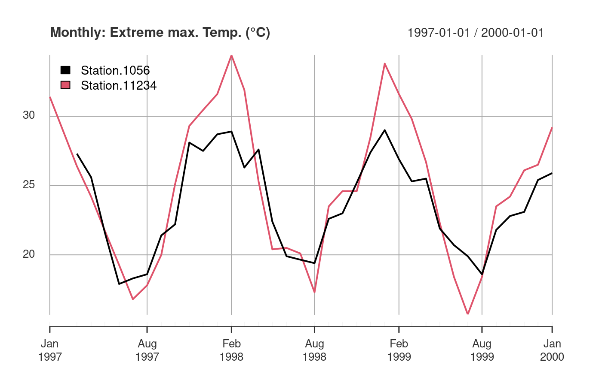

vignettes/sos4R-vignette-05-wrapper-functions.Rmd
sos4R-vignette-05-wrapper-functions.Rmdsos4R includes a collection of convenience functions which wrap the complex SOS interface with its specific terms (e.g. FOI, procedure). The wrapper function use more generic terms easily accessible for all users, especially without a strong knowledge of the OGC standards of the Sensor Web Enablement (see “OGC SWE and SOS” vignette for details).
In general, these functions always return an object of class data.frame, even if the result is only a list, in which case the data.frame has one column.
The function phenomena(..) provides information about observed phenomena, time periods of data, and sites observing these phenomena.
phenomena <- phenomena(sos = mySos)
str(phenomena)
#> 'data.frame': 84 obs. of 1 variable:
#> $ phenomenon: chr "MTHLY_STATS: DAYS OF DEFICIT (WBal AWC=150mm) (MTHLY: DAYS OF DEFICIT (WBAL))" "MTHLY_STATS: DAYS OF OCCURRENCE (FOG) (MTHLY: FOG DAYS)" "MTHLY_STATS: DAYS OF OCCURRENCE (GALE) (MTHLY: GALE DAYS)" "MTHLY_STATS: DAYS OF OCCURRENCE (GROUND FROST) (MTHLY: GROUND FROST DAYS)" ...phenomena[1:maxOutputRowsPerExample,]
#> [1] "MTHLY_STATS: DAYS OF DEFICIT (WBal AWC=150mm) (MTHLY: DAYS OF DEFICIT (WBAL))"
#> [2] "MTHLY_STATS: DAYS OF OCCURRENCE (FOG) (MTHLY: FOG DAYS)"
#> [3] "MTHLY_STATS: DAYS OF OCCURRENCE (GALE) (MTHLY: GALE DAYS)"
#> [4] "MTHLY_STATS: DAYS OF OCCURRENCE (GROUND FROST) (MTHLY: GROUND FROST DAYS)"
#> [5] "MTHLY_STATS: DAYS OF OCCURRENCE (GUSTS over 23 knots) (MTHLY: GUST DAYS 24)"The retrieved data can be extended to the time intervals and site identifier for which data is available. The next example shows the overall temporal availability of the phenomena in the SOS instance:
phenomena(sos = mySos, includeTemporalBBox = TRUE)[1:maxOutputRowsPerExample,]
#> phenomenon
#> 1 MTHLY_STATS: TOTAL RAINFALL (MTHLY: TOTAL RAIN)
#> 2 MTHLY_STATS: WET DAYS with rainfall 1 mm or more (MTHLY: WET DAYS)
#> 3 MTHLY_STATS: MEAN AIR TEMPERATURE; 0.5* (MAX + MIN) (MTHLY: MEAN TEMP)
#> 4 MTHLY_STATS: MEAN MAXIMUM TEMPERATURE from daily Maxs (MTHLY: MEAN MAX TEMP)
#> 5 MTHLY_STATS: MEAN MINIMUM TEMPERATURE from daily Mins (MTHLY: MEAN MIN TEMP)
#> timeBegin timeEnd
#> 1 1960-08-01 2019-07-01
#> 2 1960-08-01 2019-07-01
#> 3 1960-08-01 2019-07-01
#> 4 1960-08-01 2019-07-01
#> 5 1960-08-01 2019-07-01This example shows at which site the phenomena are available:
phenomena(sos = mySos, includeSiteId = TRUE)[1:maxOutputRowsPerExample,]
#> phenomenon
#> 61 MTHLY_STATS: DAYS OF DEFICIT (WBal AWC=150mm) (MTHLY: DAYS OF DEFICIT (WBAL))
#> 126 MTHLY_STATS: DAYS OF DEFICIT (WBal AWC=150mm) (MTHLY: DAYS OF DEFICIT (WBAL))
#> 152 MTHLY_STATS: DAYS OF DEFICIT (WBal AWC=150mm) (MTHLY: DAYS OF DEFICIT (WBAL))
#> 251 MTHLY_STATS: DAYS OF DEFICIT (WBal AWC=150mm) (MTHLY: DAYS OF DEFICIT (WBAL))
#> 293 MTHLY_STATS: DAYS OF DEFICIT (WBal AWC=150mm) (MTHLY: DAYS OF DEFICIT (WBAL))
#> siteID
#> 61 17244
#> 126 26958
#> 152 25506
#> 251 22719
#> 293 37850You can also add both temporal extent and sites:
phenomena(sos = mySos, includeTemporalBBox = TRUE, includeSiteId = TRUE)[1:maxOutputRowsPerExample,]
#> phenomenon
#> 61 MTHLY_STATS: DAYS OF DEFICIT (WBal AWC=150mm) (MTHLY: DAYS OF DEFICIT (WBAL))
#> 126 MTHLY_STATS: DAYS OF DEFICIT (WBal AWC=150mm) (MTHLY: DAYS OF DEFICIT (WBAL))
#> 152 MTHLY_STATS: DAYS OF DEFICIT (WBal AWC=150mm) (MTHLY: DAYS OF DEFICIT (WBAL))
#> 251 MTHLY_STATS: DAYS OF DEFICIT (WBal AWC=150mm) (MTHLY: DAYS OF DEFICIT (WBAL))
#> 293 MTHLY_STATS: DAYS OF DEFICIT (WBal AWC=150mm) (MTHLY: DAYS OF DEFICIT (WBAL))
#> siteID timeBegin timeEnd
#> 61 17244 1999-08-01 2019-07-01
#> 126 26958 2007-08-01 2019-07-01
#> 152 25506 2004-12-01 2018-06-01
#> 251 22719 2002-07-01 2018-11-01
#> 293 37850 2011-11-01 2019-07-01The function sites(..) provides information about sites where observations are performed, including metadata about the sites (e.g. location). The returned object is a SpatialPointsDataFrame.
sites <- sites(sos = mySos)
sites[1:maxOutputRowsPerExample,]
#> coordinates siteID
#> 1 (173.926, -35.183) 1056
#> 2 (172.851, -42.53433) 11234
#> 3 (172.9716, -41.09798) 12429
#> 4 (173.9628, -41.49891) 12430
#> 5 (169.3148, -45.20724) 12431To see all sites, even the ones without any data, use the empty parameter.
sites_with_empty <- sites(sos = mySos, empty = TRUE)
sites_with_empty[1:maxOutputRowsPerExample,]
#> coordinates siteID empty
#> 1 (173.926, -35.183) 1056 FALSE
#> 2 (172.851, -42.53433) 11234 FALSE
#> 3 (172.9716, -41.09798) 12429 FALSE
#> 4 (173.9628, -41.49891) 12430 FALSE
#> 5 (169.3148, -45.20724) 12431 FALSEYou can retrieve additional metadata about the phenomena and the time period for which data is available. Including temporal extent implies inclusion of phenomena. In the next chunks the object is coerced to a date.frame to get a tabular view.
sites_with_phenomena <- sites(sos = mySos, includePhenomena = TRUE)
sites_with_phenomena[1:maxOutputRowsPerExample, 1:maxOutputColumnsPerExample]
#> coordinates siteID
#> 1 (173.926, -35.183) 1056
#> 2 (172.851, -42.53433) 11234
#> 3 (172.9716, -41.09798) 12429
#> 4 (173.9628, -41.49891) 12430
#> 5 (169.3148, -45.20724) 12431
#> MTHLY_STATS..DAYS.OF.DEFICIT..WBal.AWC.150mm...MTHLY..DAYS.OF.DEFICIT..WBAL..
#> 1 TRUE
#> 2 TRUE
#> 3 TRUE
#> 4 TRUE
#> 5 TRUE
#> MTHLY_STATS..DAYS.OF.OCCURRENCE..FOG...MTHLY..FOG.DAYS.
#> 1 TRUE
#> 2 FALSE
#> 3 FALSE
#> 4 FALSE
#> 5 FALSEThe next section show how to retrieve spatial information about the sites and temporal information about the available phenomena:
sites_with_temporal_bbox <- sites(sos = mySos, includePhenomena = TRUE, includeTemporalBBox = TRUE)
tail(sites_with_temporal_bbox, n = 3)[,1:maxOutputColumnsPerExample]
#> coordinates siteID
#> 58 (171.8601, -42.11578) 3925
#> 59 (169.3182, -45.20342) 39564
#> 60 (169.6842, -45.0401) 5535
#> MTHLY_STATS..DAYS.OF.DEFICIT..WBal.AWC.150mm...MTHLY..DAYS.OF.DEFICIT..WBAL..
#> 58 -291945600, 1561939200
#> 59 1333238400, 1561939200
#> 60 539136000, 1561939200
#> MTHLY_STATS..DAYS.OF.OCCURRENCE..FOG...MTHLY..FOG.DAYS.
#> 58 -297216000, 691545600
#> 59 NA
#> 60 NAThe following chunk shows how to get a better representation:
str(tail(sites_with_temporal_bbox, n = 3)[,1:maxOutputColumnsPerExample])
#> Formal class 'SpatialPointsDataFrame' [package "sp"] with 5 slots
#> ..@ data :'data.frame': 3 obs. of 3 variables:
#> .. ..$ siteID : chr [1:3] "3925" "39564" "5535"
#> .. ..$ MTHLY_STATS: DAYS OF DEFICIT (WBal AWC=150mm) (MTHLY: DAYS OF DEFICIT (WBAL)):List of 3
#> .. .. ..$ MTHLY_STATS: DAYS OF DEFICIT (WBal AWC=150mm) (MTHLY: DAYS OF DEFICIT (WBAL)):'data.frame': 1 obs. of 2 variables:
#> .. .. .. ..$ timeBegin: POSIXct[1:1], format: "1960-10-01"
#> .. .. .. ..$ timeEnd : POSIXct[1:1], format: "2019-07-01"
#> .. .. ..$ MTHLY_STATS: DAYS OF DEFICIT (WBal AWC=150mm) (MTHLY: DAYS OF DEFICIT (WBAL)):'data.frame': 1 obs. of 2 variables:
#> .. .. .. ..$ timeBegin: POSIXct[1:1], format: "2012-04-01"
#> .. .. .. ..$ timeEnd : POSIXct[1:1], format: "2019-07-01"
#> .. .. ..$ MTHLY_STATS: DAYS OF DEFICIT (WBal AWC=150mm) (MTHLY: DAYS OF DEFICIT (WBAL)):'data.frame': 1 obs. of 2 variables:
#> .. .. .. ..$ timeBegin: POSIXct[1:1], format: "1987-02-01"
#> .. .. .. ..$ timeEnd : POSIXct[1:1], format: "2019-07-01"
#> .. ..$ MTHLY_STATS: DAYS OF OCCURRENCE (FOG) (MTHLY: FOG DAYS) :List of 3
#> .. .. ..$ MTHLY_STATS: DAYS OF OCCURRENCE (FOG) (MTHLY: FOG DAYS):'data.frame': 1 obs. of 2 variables:
#> .. .. .. ..$ timeBegin: POSIXct[1:1], format: "1960-08-01"
#> .. .. .. ..$ timeEnd : POSIXct[1:1], format: "1991-12-01"
#> .. .. ..$ MTHLY_STATS: DAYS OF OCCURRENCE (FOG) (MTHLY: FOG DAYS): logi NA
#> .. .. ..$ MTHLY_STATS: DAYS OF OCCURRENCE (FOG) (MTHLY: FOG DAYS): logi NA
#> ..@ coords.nrs : num(0)
#> ..@ coords : num [1:3, 1:2] 171.9 169.3 169.7 -42.1 -45.2 ...
#> .. ..- attr(*, "dimnames")=List of 2
#> .. .. ..$ : NULL
#> .. .. ..$ : chr [1:2] "lon" "lat"
#> ..@ bbox : num [1:2, 1:2] 169.3 -45.2 171.9 -42.1
#> .. ..- attr(*, "dimnames")=List of 2
#> .. .. ..$ : chr [1:2] "lon" "lat"
#> .. .. ..$ : chr [1:2] "min" "max"
#> ..@ proj4string:Formal class 'CRS' [package "sp"] with 1 slot
#> .. .. ..@ projargs: chr "+init=epsg:4326 +proj=longlat +datum=WGS84 +no_defs +ellps=WGS84 +towgs84=0,0,0"You can filter sites using phenomena and temporal extent.
Note: When creating time objects from strings, as.POSIXct(..) by default recognises the local timezone and creates a time object in UTC.
sites_filtered_by_phenomena <- sites(sos = mySos, phenomena = phenomena[3,])
nrow(sites_filtered_by_phenomena@data)
#> [1] 60
nrow(sites@data)
#> [1] 60
str(sites_filtered_by_phenomena)
#> Formal class 'SpatialPointsDataFrame' [package "sp"] with 5 slots
#> ..@ data :'data.frame': 60 obs. of 1 variable:
#> .. ..$ siteID: chr [1:60] "1056" "11234" "12429" "12430" ...
#> ..@ coords.nrs : num(0)
#> ..@ coords : num [1:60, 1:2] 174 173 173 174 169 ...
#> .. ..- attr(*, "dimnames")=List of 2
#> .. .. ..$ : NULL
#> .. .. ..$ : chr [1:2] "lon" "lat"
#> ..@ bbox : num [1:2, 1:2] -176.5 -77.8 177.9 -35.1
#> .. ..- attr(*, "dimnames")=List of 2
#> .. .. ..$ : chr [1:2] "lon" "lat"
#> .. .. ..$ : chr [1:2] "min" "max"
#> ..@ proj4string:Formal class 'CRS' [package "sp"] with 1 slot
#> .. .. ..@ projargs: chr "+init=epsg:4326 +proj=longlat +datum=WGS84 +no_defs +ellps=WGS84 +towgs84=0,0,0"Use the parameter includeTemporalBBox for including additional metadata:
sites_filtered_by_phenomena_with_metadata <- sites(sos = mySos, phenomena = phenomena[3,], includePhenomena = TRUE, includeTemporalBBox = TRUE)
str(sites_filtered_by_phenomena_with_metadata)
#> Formal class 'SpatialPointsDataFrame' [package "sp"] with 5 slots
#> ..@ data :'data.frame': 2 obs. of 2 variables:
#> .. ..$ siteID : chr [1:2] "1056" "3925"
#> .. ..$ MTHLY_STATS: DAYS OF OCCURRENCE (GALE) (MTHLY: GALE DAYS):List of 2
#> .. .. ..$ MTHLY_STATS: DAYS OF OCCURRENCE (GALE) (MTHLY: GALE DAYS):'data.frame': 1 obs. of 2 variables:
#> .. .. .. ..$ timeBegin: POSIXct[1:1], format: "1981-10-01"
#> .. .. .. ..$ timeEnd : POSIXct[1:1], format: "1995-11-01"
#> .. .. ..$ MTHLY_STATS: DAYS OF OCCURRENCE (GALE) (MTHLY: GALE DAYS):'data.frame': 1 obs. of 2 variables:
#> .. .. .. ..$ timeBegin: POSIXct[1:1], format: "1960-08-01"
#> .. .. .. ..$ timeEnd : POSIXct[1:1], format: "1991-12-01"
#> ..@ coords.nrs : num(0)
#> ..@ coords : num [1:2, 1:2] 173.9 171.9 -35.2 -42.1
#> .. ..- attr(*, "dimnames")=List of 2
#> .. .. ..$ : NULL
#> .. .. ..$ : chr [1:2] "lon" "lat"
#> ..@ bbox : num [1:2, 1:2] 171.9 -42.1 173.9 -35.2
#> .. ..- attr(*, "dimnames")=List of 2
#> .. .. ..$ : chr [1:2] "lon" "lat"
#> .. .. ..$ : chr [1:2] "min" "max"
#> ..@ proj4string:Formal class 'CRS' [package "sp"] with 1 slot
#> .. .. ..@ projargs: chr "+init=epsg:4326 +proj=longlat +datum=WGS84 +no_defs +ellps=WGS84 +towgs84=0,0,0"# under development - no github issue atm
#sites_filtered_by_time <- sites(sos = mySos, begin = parsedate::parse_iso_8601("1904-01-01"), end = parsedate::parse_iso_8601("1905-12-31"))
#nrow(sites_filtered_by_time@data)
#str(sites_filtered_by_time)The SpatialPointsDataFrame allows access to coordinates with coordinate reference system (CRS).
sp::coordinates(sites)[1:maxOutputRowsPerExample,]
#> lon lat
#> [1,] 173.9260 -35.18300
#> [2,] 172.8510 -42.53433
#> [3,] 172.9717 -41.09798
#> [4,] 173.9629 -41.49891
#> [5,] 169.3148 -45.20724sites@proj4string
#> CRS arguments:
#> +init=epsg:4326 +proj=longlat +datum=WGS84 +no_defs +ellps=WGS84
#> +towgs84=0,0,0This object can be directly used as input for various mapping libraries, e.g. mapview.
The function siteList(..) provides information about observed phenomena at sites and the time periods when data is available.
siteList <- siteList(sos = mySos)
str(siteList)
#> 'data.frame': 60 obs. of 1 variable:
#> $ siteID: chr "1056" "11234" "12429" "12430" ...You can extend the information returned with these parameters:
empty to also show sites without dataincludePhenomena to add phenomena to the table (boolean)includeTemporalBBox to also show the time when data is available (boolean)You can filter the results with these parameters:
phenomena is a vector of phenomena which must be measured at the sitesbegin and end define a time interval (date and time class objects) for which some data must be available (sites may have data outside the given interval)Note: When creating time objects from strings, as.POSIXct(..) by default recognises the local timezone and creates a time object in UTC.
The function getData(..) retrieves the actual data and returns them in ready-to-use data structures from the spacetime package.
The returned data can be limited by thematical, spatial, and temporal filters. Thematical filtering (phenomena) support the values of the previous functions as inputs. Spatial filters are either sites, or a bounding box. Temporal filter is a time period during which observations are made.
Without a temporal extent, the used SOS only returns the last measurement.
observationData <- getData(sos = mySos,
phenomena = phenomena[18,1],
sites = siteList[1:2,1]
)
str(observationData)
#> 'data.frame': 2 obs. of 3 variables:
#> $ siteID : Factor w/ 2 levels "1056","11234": 1 2
#> $ timestamp : POSIXct, format: "2019-07-01" "2019-05-01"
#> $ MTHLY_STATS: EXTREME MAXIMUM TEMPERATURE (MTHLY: EXTR MAX TEMP): num 19.7 23.2
#> ..- attr(*, "metadata")=Formal class 'WmlMeasurementTimeseriesMetadata' [package "sos4R"] with 1 slot
#> .. .. ..@ temporalExtent:Formal class 'GmlTimeInstant' [package "sos4R"] with 4 slots
#> .. .. .. .. ..@ timePosition:Formal class 'GmlTimePosition' [package "sos4R"] with 4 slots
#> .. .. .. .. .. .. ..@ time : POSIXct, format: "2019-07-01"
#> .. .. .. .. .. .. ..@ frame : chr NA
#> .. .. .. .. .. .. ..@ calendarEraName : chr NA
#> .. .. .. .. .. .. ..@ indeterminatePosition: chr NA
#> .. .. .. .. ..@ frame : chr NA
#> .. .. .. .. ..@ relatedTimes: list()
#> .. .. .. .. ..@ id : chr "phenomenonTime_1"
#> ..- attr(*, "defaultPointMetadata")=Formal class 'WmlDefaultTVPMeasurementMetadata' [package "sos4R"] with 2 slots
#> .. .. ..@ uom : chr "DEGREE_CELSIUS"
#> .. .. ..@ interpolationType:Formal class 'WmlInterpolationType' [package "sos4R"] with 2 slots
#> .. .. .. .. ..@ href : chr "http://www.opengis.net/def/timeseriesType/WaterML/2.0/continuous"
#> .. .. .. .. ..@ title: chr "Instantaneous"The result data.frame includes additional metadata.
attributes(observationData[[3]])
#> $metadata
#> An object of class "WmlMeasurementTimeseriesMetadata"
#> Slot "temporalExtent":
#> GmlTimePosition [ time: 2019-07-01 ]
#>
#> $defaultPointMetadata
#> An object of class "WmlDefaultTVPMeasurementMetadata"
#> Slot "uom":
#> [1] "DEGREE_CELSIUS"
#>
#> Slot "interpolationType":
#> An object of class "WmlInterpolationType"
#> Slot "href":
#> [1] "http://www.opengis.net/def/timeseriesType/WaterML/2.0/continuous"
#>
#> Slot "title":
#> [1] "Instantaneous"Request more data with a temporal extent for all sites.
Note: When creating time objects from strings, as.POSIXct(..) by default recognises the local timezone and creates a time object in UTC.
observationData <- getData(sos = mySos,
phenomena = phenomena[18,1],
sites = siteList[1,1],
begin = parsedate::parse_iso_8601("1970-01-01T12:00:00+12:00"),
end = parsedate::parse_iso_8601("2000-01-02T12:00:00+12:00")
)
str(observationData)
#> 'data.frame': 212 obs. of 3 variables:
#> $ siteID : Factor w/ 1 level "1056": 1 1 1 1 1 1 1 1 1 1 ...
#> $ timestamp : POSIXct, format: "1981-10-01" "1981-11-01" ...
#> $ MTHLY_STATS: EXTREME MAXIMUM TEMPERATURE (MTHLY: EXTR MAX TEMP): num 20.6 21.9 25 27.8 29.2 24.5 22.9 20.7 18.3 18 ...
#> ..- attr(*, "metadata")=Formal class 'WmlMeasurementTimeseriesMetadata' [package "sos4R"] with 1 slot
#> .. .. ..@ temporalExtent:Formal class 'GmlTimePeriod' [package "sos4R"] with 9 slots
#> .. .. .. .. ..@ begin : NULL
#> .. .. .. .. ..@ beginPosition:Formal class 'GmlTimePosition' [package "sos4R"] with 4 slots
#> .. .. .. .. .. .. ..@ time : POSIXct, format: "1981-10-01"
#> .. .. .. .. .. .. ..@ frame : chr NA
#> .. .. .. .. .. .. ..@ calendarEraName : chr NA
#> .. .. .. .. .. .. ..@ indeterminatePosition: chr NA
#> .. .. .. .. ..@ end : NULL
#> .. .. .. .. ..@ endPosition :Formal class 'GmlTimePosition' [package "sos4R"] with 4 slots
#> .. .. .. .. .. .. ..@ time : POSIXct, format: "2000-01-01"
#> .. .. .. .. .. .. ..@ frame : chr NA
#> .. .. .. .. .. .. ..@ calendarEraName : chr NA
#> .. .. .. .. .. .. ..@ indeterminatePosition: chr NA
#> .. .. .. .. ..@ duration : chr NA
#> .. .. .. .. ..@ timeInterval : NULL
#> .. .. .. .. ..@ frame : chr NA
#> .. .. .. .. ..@ relatedTimes : list()
#> .. .. .. .. ..@ id : chr "phenomenonTime_1"
#> ..- attr(*, "defaultPointMetadata")=Formal class 'WmlDefaultTVPMeasurementMetadata' [package "sos4R"] with 2 slots
#> .. .. ..@ uom : chr "DEGREE_CELSIUS"
#> .. .. ..@ interpolationType:Formal class 'WmlInterpolationType' [package "sos4R"] with 2 slots
#> .. .. .. .. ..@ href : chr "http://www.opengis.net/def/timeseriesType/WaterML/2.0/continuous"
#> .. .. .. .. ..@ title: chr "Instantaneous"Get an overview of the data using the summary function:
summary(observationData)
#> siteID timestamp
#> 1056:212 Min. :1981-10-01 00:00:00
#> 1st Qu.:1986-02-22 00:00:00
#> Median :1990-07-16 12:00:00
#> Mean :1990-09-03 15:50:56
#> 3rd Qu.:1995-02-08 00:00:00
#> Max. :2000-01-01 00:00:00
#> MTHLY_STATS: EXTREME MAXIMUM TEMPERATURE (MTHLY: EXTR MAX TEMP)
#> Min. :17.10
#> 1st Qu.:20.10
#> Median :22.95
#> Mean :23.24
#> 3rd Qu.:26.20
#> Max. :30.20Plot received data as time series:
suppressPackageStartupMessages(library(xts))
ts1056 <- xts(observationData[observationData$siteID == '1056',3], observationData[observationData$siteID == '1056',"timestamp"])
names(ts1056) <- "#1056"
plot(x = ts1056, main = "Monthly: Extreme max. Temp. (°C)", yaxis.right = FALSE, legend.loc = 'topleft')The next example gets data for two phenomena a site.
# TO BE IMPLEMENTED: merge different observation types - see https://github.com/52North/sos4R/issues/96#issuecomment-493424151
observationData <- getData(sos = mySos,
phenomena = phenomena$phenomenon[1:2],
sites = siteList$siteID[c(1,58)],
begin = parsedate::parse_iso_8601("1994-12-31T12:00:00+12:00"),
end = parsedate::parse_iso_8601("1995-12-31T12:00:00+12:00")
)
str(observationData)
#> 'data.frame': 23 obs. of 4 variables:
#> $ siteID : Factor w/ 2 levels "1056","3925": 1 1 1 1 1 1 1 1 1 1 ...
#> $ timestamp : POSIXct, format: "1995-01-01" "1995-02-01" ...
#> $ MTHLY_STATS: DAYS OF DEFICIT (WBal AWC=150mm) (MTHLY: DAYS OF DEFICIT (WBAL)): num 9 9 0 0 0 0 0 0 0 0 ...
#> ..- attr(*, "metadata")=Formal class 'WmlMeasurementTimeseriesMetadata' [package "sos4R"] with 1 slot
#> .. .. ..@ temporalExtent:Formal class 'GmlTimePeriod' [package "sos4R"] with 9 slots
#> .. .. .. .. ..@ begin : NULL
#> .. .. .. .. ..@ beginPosition:Formal class 'GmlTimePosition' [package "sos4R"] with 4 slots
#> .. .. .. .. .. .. ..@ time : POSIXct, format: "1995-01-01"
#> .. .. .. .. .. .. ..@ frame : chr NA
#> .. .. .. .. .. .. ..@ calendarEraName : chr NA
#> .. .. .. .. .. .. ..@ indeterminatePosition: chr NA
#> .. .. .. .. ..@ end : NULL
#> .. .. .. .. ..@ endPosition :Formal class 'GmlTimePosition' [package "sos4R"] with 4 slots
#> .. .. .. .. .. .. ..@ time : POSIXct, format: "1995-12-01"
#> .. .. .. .. .. .. ..@ frame : chr NA
#> .. .. .. .. .. .. ..@ calendarEraName : chr NA
#> .. .. .. .. .. .. ..@ indeterminatePosition: chr NA
#> .. .. .. .. ..@ duration : chr NA
#> .. .. .. .. ..@ timeInterval : NULL
#> .. .. .. .. ..@ frame : chr NA
#> .. .. .. .. ..@ relatedTimes : list()
#> .. .. .. .. ..@ id : chr "phenomenonTime_1"
#> ..- attr(*, "defaultPointMetadata")=Formal class 'WmlDefaultTVPMeasurementMetadata' [package "sos4R"] with 2 slots
#> .. .. ..@ uom : chr "DAY"
#> .. .. ..@ interpolationType:Formal class 'WmlInterpolationType' [package "sos4R"] with 2 slots
#> .. .. .. .. ..@ href : chr "http://www.opengis.net/def/timeseriesType/WaterML/2.0/continuous"
#> .. .. .. .. ..@ title: chr "Instantaneous"
#> $ MTHLY_STATS: DAYS OF OCCURRENCE (FOG) (MTHLY: FOG DAYS) : num 1 0 0 5 4 2 3 1 0 0 ...
#> ..- attr(*, "metadata")=Formal class 'WmlMeasurementTimeseriesMetadata' [package "sos4R"] with 1 slot
#> .. .. ..@ temporalExtent:Formal class 'GmlTimePeriod' [package "sos4R"] with 9 slots
#> .. .. .. .. ..@ begin : NULL
#> .. .. .. .. ..@ beginPosition:Formal class 'GmlTimePosition' [package "sos4R"] with 4 slots
#> .. .. .. .. .. .. ..@ time : POSIXct, format: "1995-01-01"
#> .. .. .. .. .. .. ..@ frame : chr NA
#> .. .. .. .. .. .. ..@ calendarEraName : chr NA
#> .. .. .. .. .. .. ..@ indeterminatePosition: chr NA
#> .. .. .. .. ..@ end : NULL
#> .. .. .. .. ..@ endPosition :Formal class 'GmlTimePosition' [package "sos4R"] with 4 slots
#> .. .. .. .. .. .. ..@ time : POSIXct, format: "1995-11-01"
#> .. .. .. .. .. .. ..@ frame : chr NA
#> .. .. .. .. .. .. ..@ calendarEraName : chr NA
#> .. .. .. .. .. .. ..@ indeterminatePosition: chr NA
#> .. .. .. .. ..@ duration : chr NA
#> .. .. .. .. ..@ timeInterval : NULL
#> .. .. .. .. ..@ frame : chr NA
#> .. .. .. .. ..@ relatedTimes : list()
#> .. .. .. .. ..@ id : chr "phenomenonTime_2"
#> ..- attr(*, "defaultPointMetadata")=Formal class 'WmlDefaultTVPMeasurementMetadata' [package "sos4R"] with 2 slots
#> .. .. ..@ uom : chr "DAY"
#> .. .. ..@ interpolationType:Formal class 'WmlInterpolationType' [package "sos4R"] with 2 slots
#> .. .. .. .. ..@ href : chr "http://www.opengis.net/def/timeseriesType/WaterML/2.0/continuous"
#> .. .. .. .. ..@ title: chr "Instantaneous"You can also retrieve data for phenomena from multiple sites.
multipleSites <- siteList$siteID[1:2]
observationData <- getData(sos = mySos,
phenomena = phenomena[18, 1],
sites = multipleSites,
begin = parsedate::parse_iso_8601("1997-01-01T12:00:00+12:00"),
end = parsedate::parse_iso_8601("2000-01-02T12:00:00+12:00")
)
ts1056 <- xts(observationData[observationData$siteID == '1056', 3], observationData[observationData$siteID == '1056',"timestamp"])
names(ts1056) <- "Station#1056"
ts11234 <- xts(observationData[observationData$siteID == '11234', 3], observationData[observationData$siteID == '11234',"timestamp"])
names(ts11234) <- "Station#11234"
plot(x = na.fill(merge(ts1056, ts11234), list(NA, "extend", NA)), main = "Monthly: Extreme max. Temp. (°C)", yaxis.right = FALSE, legend.loc = 'topleft')
Map of the according sites: